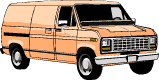

|
|
|

Welcome to the third issue of thawed. What have we been up to?
The roof, read about it in "outings". Hungry? You won't be after you
check out the food of the week in "the little things".
The "identify the celebrities from their clipart" page isn't quite ready yet. Be patient. Thanks to all those who connected to our chat room! It is still up and always running, and we simply drop everything whenever we have a login so keep calling. Thanks to Mike Bain a.k.a. chindaraho for the hours of inspirational entertainment, although you don't have a homepage, you're always welcome to curl up in the corner of the thawed chat room. If you are having chatting problems check out chatprob.html.
Questions or comments?
thanks. |
| archives | main | chat |
* |
dummytalk | outings | little things |